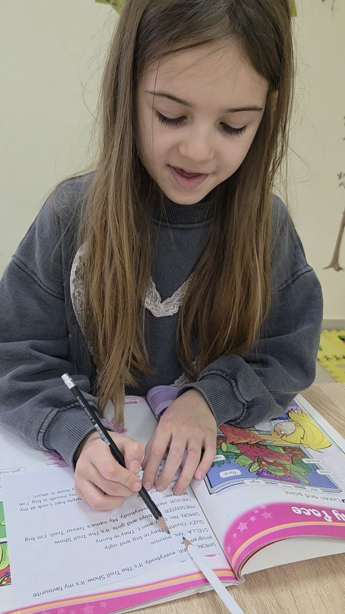
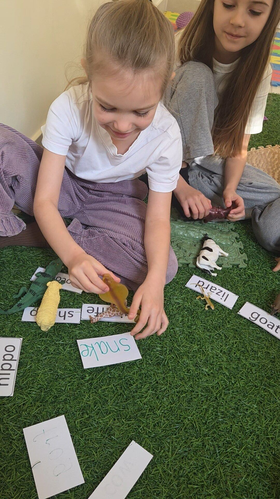
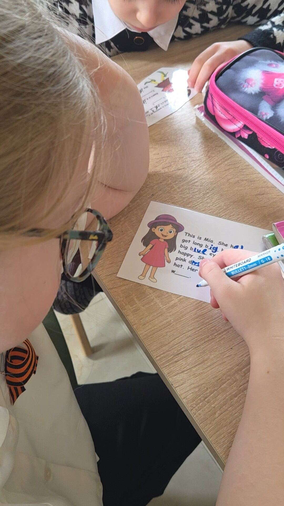
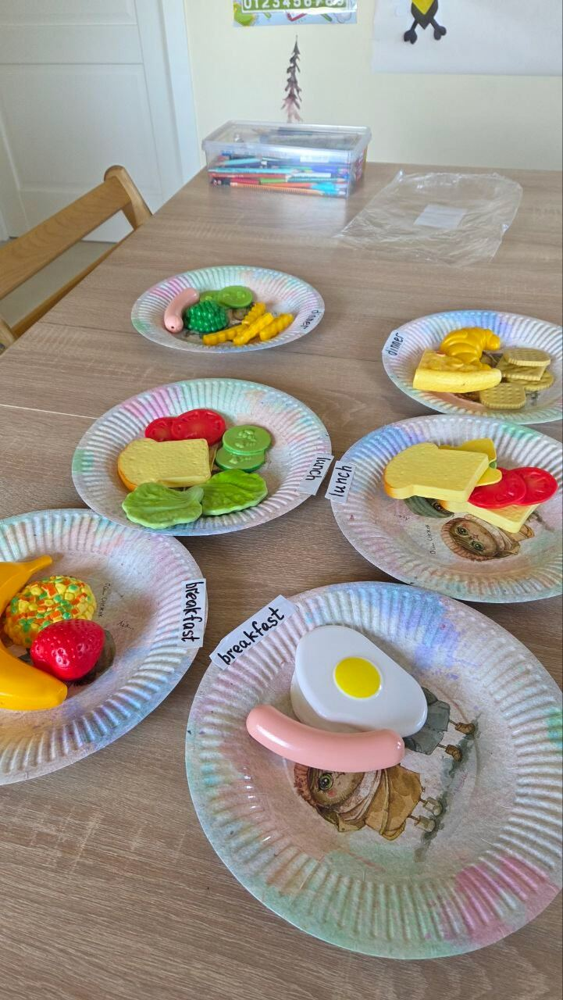

Английский, который закрывает реальную потребность родителя: базовые группы помогают уверенно идти по школьной программе, а углублённые — учат по британским учебникам Kid's Box, Go Getter и Solutions, на уровень впереди школы.
Дети усваивают иностранный язык иначе, чем взрослые — не через заучивание правил, а через погружение и повторение в разных контекстах. Поэтому на занятиях мы делаем акцент на живом языке: песнях, играх, коротких диалогах — и только затем закрепляем это грамматикой.
У нас два формата групп. Базовые группы идут параллельно школьной программе и помогают ребёнку уверенно писать контрольные и ВПР по английскому. Углублённые группы занимаются по британским учебникам издательства Cambridge и National Geographic Learning: Kid's Box Starter (5-6 лет), Kid's Box 1 (1 класс), Kid's Box 2 (2 класс), Kid's Box 3 (3 класс), Go Getter 2 (4 класс), Go Getter 3 (5-6 класс) и Solutions (подростки) — эта линейка даёт более широкий словарный запас и разговорную практику, чем школьная программа.
Наши педагоги ведут учеников по несколько лет подряд, отслеживая прогресс каждого ребёнка — некоторые ученики занимаются с нами английским уже более 10 лет, а другие успешно сдают школьные ВПР по английскому именно благодаря системной базе, полученной в студии.




Что входит в программу
Базовые группы: занятия выстроены параллельно школьной программе по английскому — лексика, грамматика и разговорная практика, которые пригодятся на уроках и контрольных
Углублённые группы: обучение по британским учебникам Kid's Box Starter, Kid's Box 1-3, Go Getter 2-3 и Solutions — с постепенным усложнением от 5-6 лет до подросткового возраста
Песни и мультфильмы: изучение лексики и произношения через любимый детьми формат
Разговорная речь: простые диалоги и ролевые игры на английском с первых занятий
Занятия по уровням: от полного новичка до уверенного разговорного уровня, с учётом возраста и школьной программы
Базовые группы идут параллельно школьной программе и помогают ребёнку увереннее чувствовать себя на уроках английского. Углублённые группы занимаются по британским учебникам Kid's Box, Go Getter и Solutions — по ним дети получают более широкий словарный запас и разговорную практику, чем в рамках школьной программы.
Мы принимаем детей с нуля, без знания языка. Уровень и формат группы (базовый или углублённый) определяется на пробном занятии, чтобы ребёнку не было ни скучно, ни слишком сложно.
Да, многие ученики занимаются у нас параллельно со школой — это помогает закрыть пробелы школьной программы и увереннее писать контрольные и ВПР.
Да, на главной странице сайта есть раздел «Развивающие игры» — несколько интерактивных игр на английскую лексику, которые ученики могут проходить дома для закрепления.
В группах английского языка — до 10 человек, это позволяет сохранять живое групповое общение и достаточную разговорную практику для каждого ребёнка.